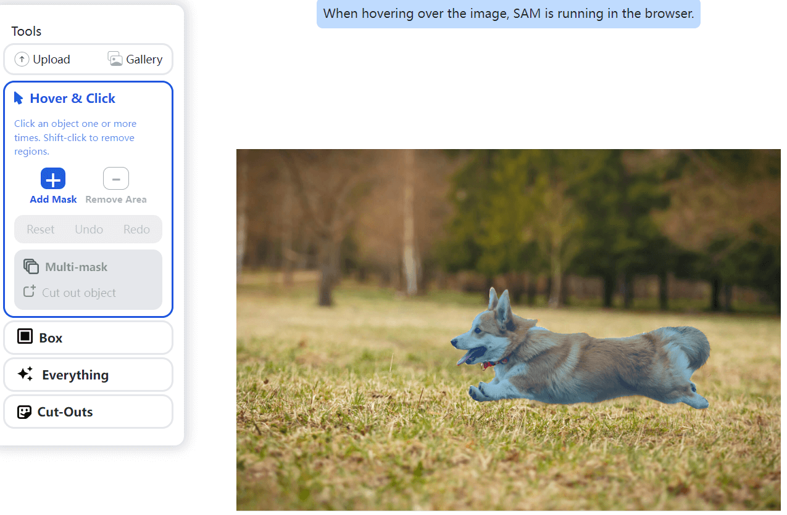
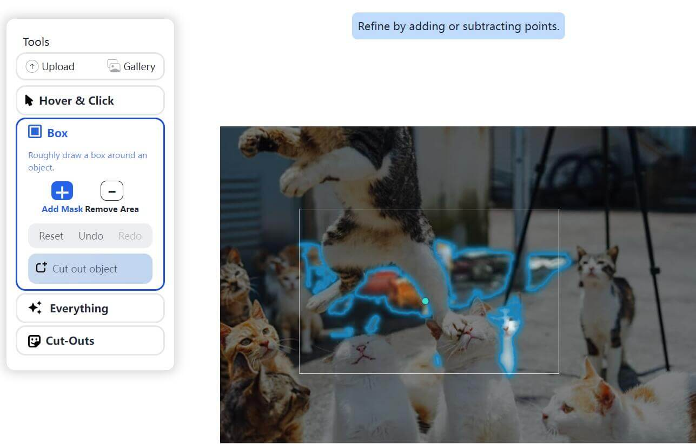
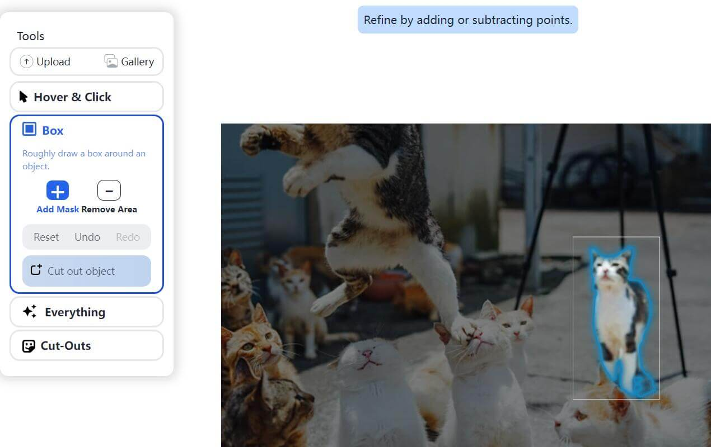

cutout
2023-04-06
2023-04-06
一. Segment Anything
貌似需要代理才能问他们的官网, 他们也提供了Github库可以本地搭建
二. 食用方法
Hover & Click
先随便选一张简单的构图测试一下效果
鼠标移动的时候会自动选中鼠标所在位置的一个整体
点击左键就会被选中,如果他扣的不完整,可以左键选中没选中的部分
如果选到了不需要的部分,左边面板选择Remove Area后去点击不需要的部分即可清楚
选择完毕后,点击左边面板的Cut out object即可输出

这是输出的效果,能看出识别率还可以,就是没有羽化所以显得边缘不太平整
Box
除了第一种点击选中,类似PS的模板的使用方法外
他还提供了Box方法,鼠标长按拉动选中后自动识别物体
这次我们使用一张复杂一点的图片看看效果


这个选中框全部选中的单位才会被识别,只有部分被选中则不会被识别到
整体识别率还行,就是如果图片太大干扰物太多会导致选中一些奇怪的东西
Everything
Segment Anything还提供一种全自动的抠图方式
这个方式会自动帮你选择图内的所有物体,并且输出为单独一个文件
我们放一张物体非常多的图, 扫描的时间大概在2-3秒
果然豆子这种一堆的他就没办法正常抠出了
白萝卜这种就能正常识别,但是边缘处理还是不太行
三. 总结
总体来看效果还是比较一般,虽然处理速度和识别率还可以
不过作为一个辅助工具已经是合格了,虽然效果不如removebg
但是胜在开源和免费,希望后面继续更新能把边缘处理好